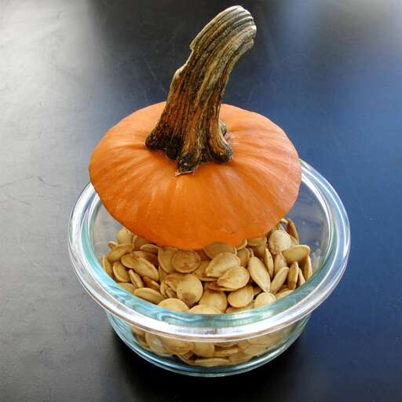

Toasted Pumpkin Seeds

Description
This is what you can do with all those seeds after the Jack O' Lantern is carved! Any seasoning will work in place of salt. Try Cajun!
Ingredients
- 2 cups raw whole pumpkin seeds
- 2 tablespoons vegetable oil
- 1 tablespoon salt
Steps
- Preheat oven to 325 degrees F (165 degrees C).
- Spread the pumpkin seeds on a medium baking sheet. Drizzle with oil. Sprinkle with salt.
- Bake 45 minutes in the preheated oven, stirring occasionally, until lightly toasted.
Source: https://www.allrecipes.com